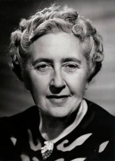

"The Queen of Mystery"

Agatha Christie (1890–1976)
“The truth, however ugly in itself, is always curious and beautiful to seekers after it.”
― Agatha Christie, The Murder of Roger Ackroyd
Agatha Christie was an English writer of crime and romantic novels. She is best remembered for her detective stories including the two diverse characters of the quiet but effective old lady, Miss Marple, and the proud and immaculate, Hercule Poirot. She is considered to be the best selling writer of all time. Only the Bible is known to have outstripped her collected sales of roughly four billion worldwide copies.
The plot of Agatha Christies novels could be described as formulaic. Murders were committed by ingenious methods – often involving poison, which Agatha Christie had great knowledge of from her time as a nurse. After interrogating all the main suspects, the detective would bring all the participants into some drawing-room before explaining who was the murderer. Her writing was quite clear and it is easy to get absorbed in the flow of the story. It also gave readers the chance to try and work out who the murderer was before it was revealed at the end.
Her success led to her being appointed Dame Commander of the British Empire in 1971.
Click here to see Agatha Christie's top 10 mystery novels and start reading